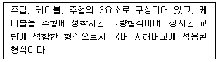
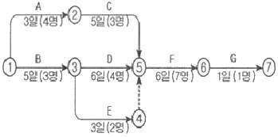
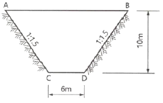
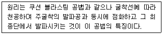
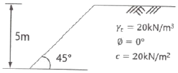
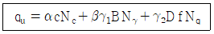
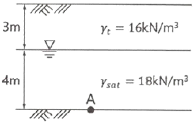
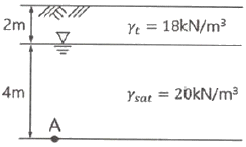
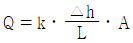

1과목: 콘크리트공학
1. 프리스트레스트 콘크리트에 대한 설명으로 틀린 것은?
2. 15회의 시험실적으로부터 구한 콘크리트 압축강도의 표준편차가 2.5MPa이고, 콘크리트의 설계기준압축강도가 30MPa인 경우 콘크리트의 배합강도는?
3. 콘크리트의 크리프에 영향을 미치는 요인에 대한 설명으로 틀린 것은?
4. 콘크리트의 작업성(workability)을 증진시키기 위한 방법으로서 적당하지 않은 것은?
5. 프리스트레스트 콘크리트 그라우트에 대한 설명으로 틀린 것은?
6. 콘크리트 타설에 대한 설명으로 틀린 것은?
7. 숏크리트 시공에 대한 주의사항으로 틀린 것은?
8. 압력법에 의한 굳지 않은 콘크리트의 공기량 시험(KS F 2421) 중 물을 붓고 시험하는 경우(주수법)의 공기량 측정기 용량은 최소 얼마 이상으로 하여야 하는가?
9. 일반콘크리트 비비기로부터 타설이 끝날때까지의 시간 한도로 옳은 것은?
10. 수중 콘크리트의 시공에서 주의해야 할 사항으로 틀린 것은?
11. 한중 콘크리트에 대한 설명으로 틀린 것은?
12. 콘크리트 가지기에 대한 설명으로 틀린 것은?
13. 고압증기양생한 콘크리트에 대한 설명으로 틀린 것은?
14. 유동화 콘크리트에 대한 설명으로 틀린 것은?
15. 콘크리트 성능서하 원인의 하나인 알칼리골재 반응에 대한 설명으로 틀린 것은?
16. 골재의 단위용적이 0.7m3인 콘크리트에서 잔골재율이 40%이고, 잔골재의 비중이 2.58이면 단위 잔골재량은 얼마인가?
17. 경량골재 콘크리트의 특징으로 틀린 것은?
18. 콘크리트의 재료분리 현상을 줄이기 위한 사항으로 틀린 것은?
19. 콘크리트 배합설계 시 굵은 최대치수의 선정방법으로 틀린 것은?
20. 콘크리트의 받아들이기 품질검사에 대한 설명으로 틀린 것은?
2과목: 건설시공 및 관리
21. 흙의 지지력 시험과 직접적인 관계가 없는 것은?
22. 교량의 구조에 따른 분류 중 아래에서 설명하는 교량 형식은?

23. 37800m3(완성된 토량)의 성토를 하는데 유용토가 40000m3(느슨한 토량)이 있다. 이 때 부족한 토량은 본바닥 토량으로 얼마인가? (단, 흙의 종류는 사질토이고 토량의 변화율은 L=1.25, C=0.90이다.)
24. 유토곡선(Mass curve)의 성질에 대한 설명으로 틀린 것은?
25. 폭우 시 옹벽 배면의 흙은 다량의 물을 함유하게 되는데 뒤채움 흙에 배수 시설이 불량할 경우 침투수가 옹벽에 미치는 영향에 대한 설명으로 틀린 것은?
26. 준설능력이 크고 대규모 공사에 적합하여 비교적 넓은 면적의 토질준설에 알맞고 선(船)형에 따라 경질토 준설도 가능한 준설선은?
27. PERT와 CPM의 차이점에 대한 설명으로 틀린 것은?
28. 강말뚝의 부식에 대한 대책으로 적당하지 않은 것은?
29. 암거의 배열방식 중 접수지거를 향하여 지형의 완만하고, 같은 습윤상태인 곳에 적합하며, 1개의 간선집수지를 또는 집수지거로 가능한 한 많은 흡수거를 합류하도록 배열하는 방식은?
30. 보강도 옹벽의 뒤채움재료로 가장 적합한 흙은?
31. 아래 그림과 같은 네트워크 공정표에서 전체 공기는?

32. 다음과 같은 절토 단면도에서 길이 30m에 대한 토량은?

33. 벤치 컷에서 벤치의 높이가 8m, 천공간격이 4m, 최소 저항선이 4m일 때 암석 굴착할 경우 장악량은? (단, 폭파계수(C)는 0.181이다.)
34. 딥퍼(dipper)용량이 0.8m3일 때 파워 셔블의 1일 작업량을 구하면? (단, 사이클 타임은 30초, 딥퍼 계수는 1.0, 흙의 토량 변화율(L)은 1.25, 작업효율은 0.6, 1일 운전시간은 8시간이다.)
35. 댐에 관한 일반적인 설명으로 틀린 것은?
36. 시멘트 콘크리트 포장에 대한 설명으로 틀린 것은?
37. 15t 덤프트럭에 1.2m3의 버킷을 갖는 백호로 흙을 적재하고자 한다. 흙의 밀도가 1.7t/m3이고, 토량변화율 L=1.25이고, 버킷계수가 0.9일 때 트럭 1대당 백호 적재횟수는?
38. 아스팔트 콘크리트포장의 소성변형(rutting)에 대한 설명으로 틀린 것은?
39. 다음에 설명하는 조절발파 공법의 명칭은?

40. 공기케이슨 공법의 장점에 대한 설명으로 틀린 것은?
3과목: 건설재료 및 시험
41. 포트랜드 시멘트의 주성분 비율 중 수경률(Hydraulic Modulus)에 대한 설명으로 틀린 것은?
42. 잔골재 A의 조립률이 2.5이고, 잔골재 B의 조립률이 2.9일 때, 이 잔골재 A와 B를 섞어 조립률 2.8의 잔골재를 만들려면 A와 B의 질량비를 얼마로 섞어야 하는가? (단, 질량비는 A:B로 나타낸다.)
43. 암석의 분류 중 성인(지질학적)에 의한 분류의 결과가 아닌 것은?
44. 강의 열처리 방법 중에서 800~1000℃로 가열시킨 후 공기 중에서 서서히 냉각하여 강속의 조직이 치밀하게 되고 잔류응력이 제거되게 하는 방법은?
45. 콘크리트용 잔골재의 안전성에 대한 설명으로 옳은 것은?
46. 잔골재의 유해물 함유량 허용한도 중 점토덩어리인 경우 중량백분율로 최댓값은 얼마인가?
47. 아스팔트 시료를 일정비율 가열하여 강구의 무게에 의해 시료가 25mm 내려갔을 때 온도를 측정한다. 이는 무엇을 구하기 위한 시험인가?
48. 재료의 역학적 성질 중 재료를 두둘길 때 얇게 퍼지는 성질을 무엇이하 하는가?
49. 플라이애시를 사용한 콘크리트의 특성으로 옳은 것은?
50. 분말도가 큰 시멘트의 성질에 대한 설명으로 옳은 것은?
51. 대폭파 또는 수중폭파에서 동시 폭파를 실시하기 위하여 뇌관 대신에 사용하는 것은?
52. 콘크리트 내부에 미세한 크기의 독립기포를 형성하여 워커빌리티 및 동결융해에 대한 저항성을 높이기 위하여 사용하는 혼화제는?
53. 토목섬유 중 폴리머를 판상으로 압축시키면서 격자모양의 형태로 구멍을 내어 만든 후 여러 가지 모양으로 늘린 것으로 연약지반 처리 및 지반 보강용으로 사용되는 것은?
54. 콘크리트용 혼화재료에 대한 설명으로 틀린 것은?
55. 역청 재료의 성질 및 시험에 대한 설명으로 틀린 것은?
56. 아스팔트의 침입도 시험기를 사용하여 온도 25℃로 일정한 조건에서 100g의 표준 침이 3mm 관입했다면, 이 재료의 침입도는 얼마인가?
57. 부순 굵은 골재의 품질에 대한 설명으로 틀린 것은?
58. 포틀랜드 시멘트(KS L 5201)에서 1종인 보통 포틀랜드 시멘트의 비카 시험에 따른 초결 및 종결 시간에 대한 규정으로 옳은 것은?
59. 목재의 건조방법 중 인공건조법이 아닌 것은?
60. 단위용적질량이 1.65kg/L인 굵은 골재의 절건밀도가 2.65kg/L일 때 이 골재의 공극률은 얼마인가?
4과목: 토질 및 기초
61. 성토나 기초지반에 있어 특히 점성토의 압밀완료 후 추가 성토 시 단기 안정문제를 검토하고자 하는 경우 적용되는 시험법은?
62. 흙의 다짐에 대한 설명으로 틀린 것은?
63. 지표면에 설치된 2m×2m의 정사각형 기초에 100kN/m2의 등분포 하중이 작용하고 있을 때 5m 깊이에 있어서의 연직응력 증가향을 2:1 분포법으로 계산한 값은?
64. 점착력이 8kN/m2, 내부 마찰각이 30°, 단위중량 16N/m3인 흙이 있다. 이 흙에 인장균열은 약 몇 m 깊이까지 발생할 것인가?
65. 100% 포화된 흐트러지지 않은 시료의 부피가 20cm3이고 질량이 36g이었다. 이 시료를 건조로에서 건조시킨 후의 질량이 24g일 때 간극비는 얼마인가?
66. 어느 모래층의 간극률 35%, 비중이 2.66이다. 이 모래의 분사현상(Quick Sand)에 대한 한계동수경사는 얼마인가?
67. Paper drain설계 시 Drain paper의 폭이 10cm, 두께가 0.3cm일 때 Drain paper의 등치환산원의 직경이 약 얼마이면 Sand drain과 동등한 값으로 볼 수 있는가? (단, 형상계수는(a) 0.75이다.)
68. 그림과 같은 점토지반에서 안전수(m)가 0.1인 경우 높이 5m의 사면에 있어서 안전율은?

69. Terzaghi의 1차원 압밀이론에 대한 가정으로 틀린 것은?
70. 사운딩(Sounding)의 종류에서 사질토에 가장 적합하고 점성토에서도 쓰이는 시험법은?
71. 얕은 기초에 대한 Terzaghi의 수정지지력 공식은 아래의 표와 같다. 4m×5m의 직사각형 기초를 사용할 경우 형상계수 α와 β의 값으로 옳은 것은?

72. 아래 그림과 같은 지반의 A점에서 전응력(σ), 간극수압(u), 유효응력(σ)을 구하면? (단, 물의 단위중량 9.81kN/m3이다.)

73. 말뚝 지지력에 관한 여러 가지 공식 중 정역학적 지지력 공식이 아닌 것은?
74. 그림에서 A점 흙의 강도정수가 c'=30kN/m2, Φ'=30°일 때, A점에서의 전단강도는? (단, 물의 단위중량은 9.81kN/m3이다.)

75. 평판 재하 실험에서 재하판의 크기에 의한 영향(scale effect)에 관한 설명으로 틀린 것은?
76. 흙의 투수성에서 사용되는 Darcy의 법칙 (

)에 대한 설명으로 틀린 것은?77. 다음 중 일시적인 지반 개량 공법에 속하는 것은?
78. 압밀시험결과 시간-침하량 곡선에서 구할 수 없는 값은?
79. 어떤 흙의 입경가적곡선에서 D10=0.⑤mm, D30=0.09mm, D60=0.15mm이었다. 균등계수(Cu)와 곡률계수(Cg)의 값은?
80. 외경이 50.8mm, 내경이 34.9mm인 스필릿 스푼 샘플러의 면적비는?